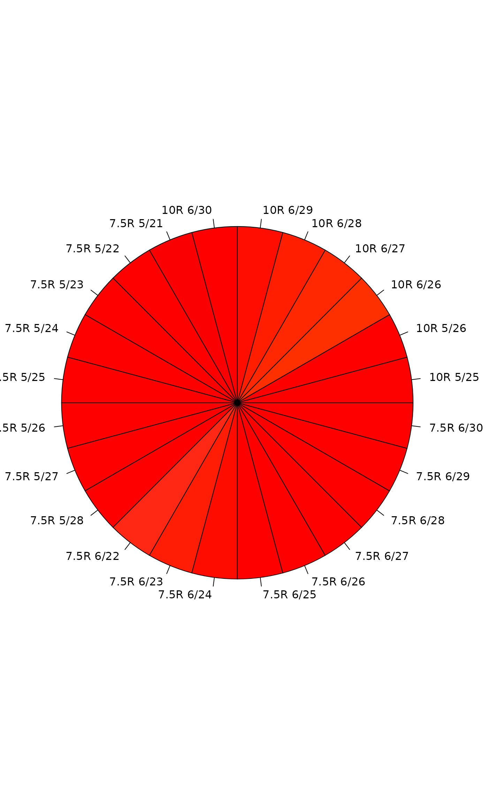

Identify "equivalent" (whole number value/chroma) Munsell chips
Source:R/equivalentMunsellChips.R
equivalentMunsellChips.RdUses a pre-calculated lookup list (equivalent_munsell) based on pair-wise CIE2000 contrast (dE00) of LAB color with D65 illuminant for all whole value/chroma "chips" in the aqp::munsell data set.
The intention is to identify Munsell chips that may be "functionally equivalent" to some other given whole value/chroma chip elsewhere in the Munsell color space – as discretized in the aqp::munsell data table. This basic assumption needs to be validated against your end goal: probably by visual inspection of some or all of the resulting sets. See colorContrast and colorContrastPlot.
"Equivalent" chips table are based (fairly arbitrarily) on the 0.001 probability level of dE00 (default Type 7 quantile) within the upper triangle of the 8467x8467 contrast matrix. This corresponds to a dE00 contrast threshold of approximately 2.16.
Value
A named list; Each list element contains a data.frame with one or more rows of "equivalent" Munsell, RGB and LAB color coordinates from munsell data set.
References
Gaurav Sharma, Wencheng Wu, Edul N. Dalal. (2005). The CIEDE2000 Color-Difference Formula: Implementation Notes, Supplementary Test Data, and Mathematical Observations. COLOR research and application. 30(1):21-30. http://www2.ece.rochester.edu/~gsharma/ciede2000/ciede2000noteCRNA.pdf
Thomas Lin Pedersen, Berendea Nicolae and Romain François (2020). farver: High Performance Colour Space Manipulation. R package version 2.0.3. https://CRAN.R-project.org/package=farver
Dong, C.E., Webb, J.B., Bottrell, M.C., Saginor, I., Lee, B.D. and Stern, L.A. (2020). Strengths, Limitations, and Recommendations for Instrumental Color Measurement in Forensic Soil Characterization. J Forensic Sci, 65: 438-449. https://doi.org/10.1111/1556-4029.14193
Examples
# 7.5YR 4/4 (the one and only)
equivalentMunsellChips("7.5YR", 4, 4)
#> $`7.5YR 4/4`
#> hue value chroma r g b L A
#> 10272 7.5YR 4 4 0.4883971 0.3493621 0.2292437 40.92954 10.80541
#> B
#> 10272 23.4536
#>
#>
#> $`7.5YR 4/4`
#> hue value chroma r g b L A B
#> 8330 7.5YR 4 4 0.4923909 0.352334 0.2313328 41.26403 10.8689 23.5914
# 7.5YR 1/1 (two chips are equivalent; 3 row result)
equivalentMunsellChips("7.5YR", 1, 1)
#> $`7.5YR 1/1`
#> hue value chroma r g b L A
#> 2429 10YR 1 1 0.1182754 0.09463558 0.06480605 8.799815 1.508883
#> 7629 5YR 1 1 0.1243547 0.09150895 0.07401048 8.794574 3.351437
#> 10237 7.5YR 1 1 0.1204975 0.09325031 0.07142669 8.796391 2.375687
#> B
#> 2429 5.893931
#> 7629 4.503886
#> 10237 4.899861
#>
#>
#> $`7.5YR 1/1`
#> hue value chroma r g b L A B
#> 1983 10YR 1 1 0.1345633 0.1087014 0.07606787 10.64787 1.621323 6.847629
#> 6189 5YR 1 1 0.1330994 0.1076359 0.09450179 10.63901 2.489012 3.515146
#> 8303 7.5YR 1 1 0.1329483 0.1082380 0.08862581 10.64210 2.065514 4.623922
# 10YR 6/8 (two chips are equivalent; 3 row result)
equivalentMunsellChips("10YR", 6, 8)
#> $`10YR 6/8`
#> hue value chroma r g b L A B
#> 2493 10YR 6 7 0.7364297 0.5498795 0.2672417 61.62420 10.49531 44.70802
#> 2494 10YR 6 8 0.7501230 0.5458205 0.2150955 61.63119 11.81028 51.06040
#> 2495 10YR 6 9 0.7623813 0.5419402 0.1554428 61.63707 13.07052 57.38919
#>
#>
#> $`10YR 6/8`
#> hue value chroma r g b L A B
#> 2039 10YR 6 7 0.7382230 0.5512957 0.2680260 61.76795 10.50886 44.78574
#> 2040 10YR 6 8 0.7519872 0.5472116 0.2157209 61.77496 11.83215 51.15496
#> 2041 10YR 6 9 0.7642826 0.5433189 0.1559069 61.78085 13.09599 57.49773
# compare visually a very red color
veryred <- equivalentMunsellChips("10R", 6, 28)[[1]]
par(mar=c(0,0,1,1))
pie(rep(1, nrow(veryred)), col = with(veryred, munsell2rgb(hue, value, chroma)),
label = with(veryred, sprintf("%s %s/%s", hue, value, chroma)))

table(veryred$hue) # 2 hues
#>
#> 10R 7.5R
#> 7 17
#>
#> 10R 7.5R
#> 8 17
table(veryred$value) # 2 values
#>
#> 5 6
#> 10 14
#>
#> 5 6
#> 11 14
table(veryred$chroma) # 10 chromas
#>
#> 21 22 23 24 25 26 27 28 29 30
#> 1 2 2 2 3 4 3 3 2 2
#>
#> 21 22 23 24 25 26 27 28 29 30
#> 1 2 2 3 3 4 3 3 2 2